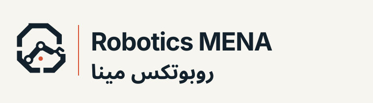
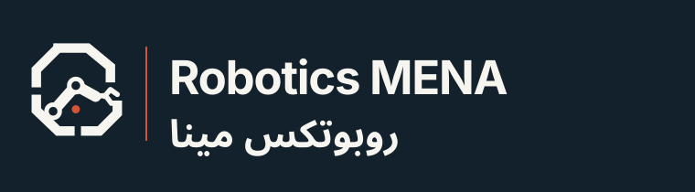
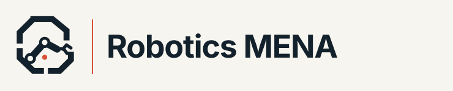
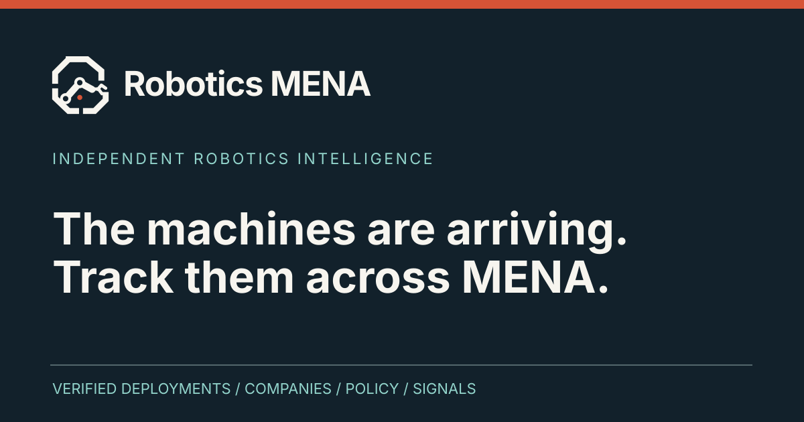
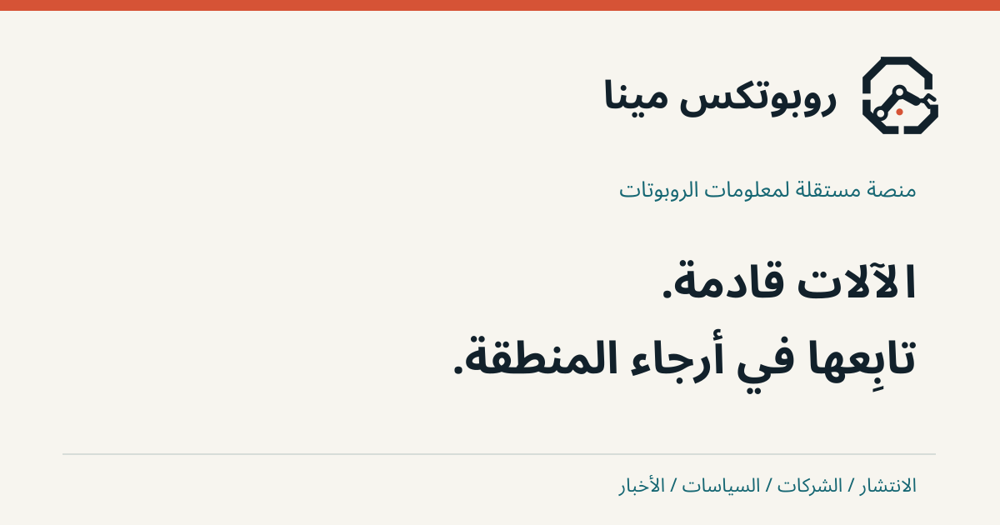
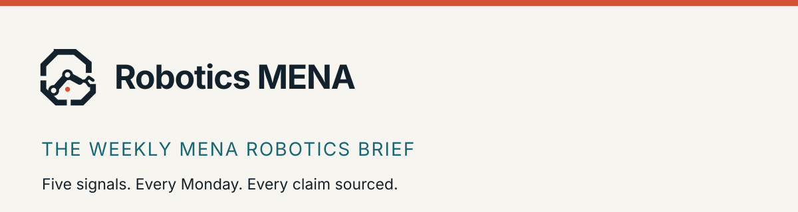
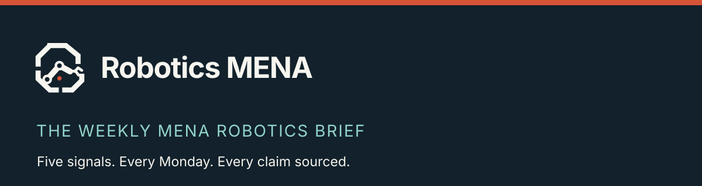
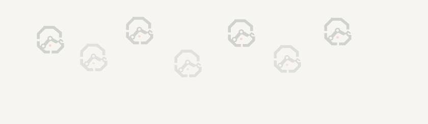
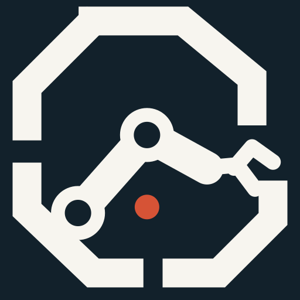
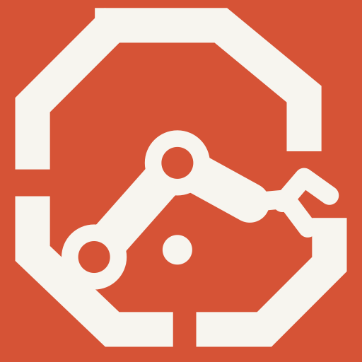

The original 1A vector paths are preserved exactly; only their brand colours have changed. The chosen headline type is 29LT Zarid Sans; preview uses Inter and Noto Sans Arabic wherever Zarid is not installed.
Use signal orange for calls to action, the logo's evidence point, and the highest-priority mapped deployments. Teal is a functional data colour, not an equally dominant brand hue.
Target brand family: coordinated Arabic and Latin versions. Commercial font licences must be purchased and web fonts installed before final production sign-off.
Technical metadata: dates, country codes, figures and source references. For Arabic prose, use the Arabic primary typeface instead of Latin monospace.
A sourced record of who is building, who is deploying and what happens next.
AD-FREE · PRIMARY SOURCES · PUBLIC CORRECTIONS

BRIEF MAP DIRECTORY POLICYIllustrative interface; no live data or counts displayed.

Social sharing / English

Social sharing / Arabic

Newsletter / light

Newsletter / dark

Low-frequency symbol-derived pattern


App icons and optical micro-mark
Preserve the selected arm's construction. No gradients in the logo. No banking crests, robot faces, gears, stock sci-fi visuals or decorative khatam-star repetition. Real robotics photography must be sourced and attributed. For small labels, use dark signal orange instead of the primary orange on paper. Validate Arabic shaping and exact wordmark spacing with licensed Zarid. This kit contains editable SVG text and fallback previews, not proprietary font files or a trademark clearance.